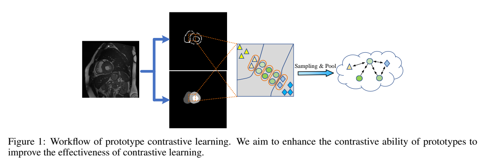
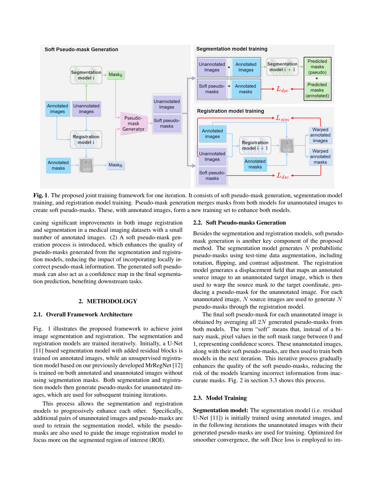
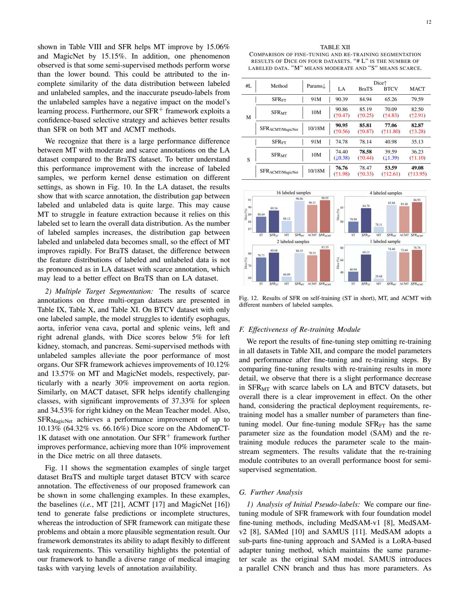
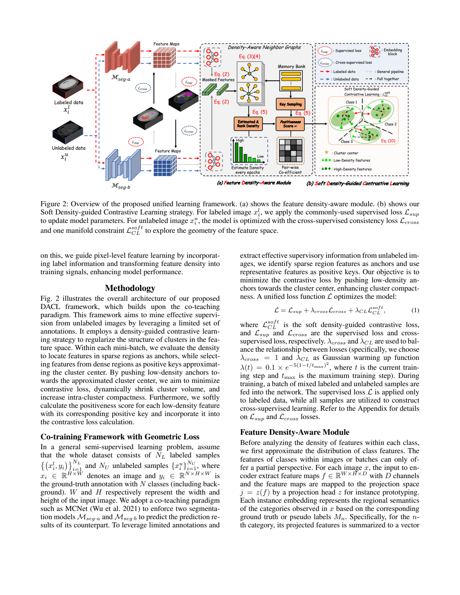

本篇未找到可可靠提取的方法流程图，请查看原文 PDF。
半监督 3D 医学分割希望用少量体素级标注加大量无标注体数据取得准确分割。主流做法是 Mean Teacher 式“弱增强教师生成伪标签、强增强学生向其对齐”的一致性学习，但教师伪标签含噪声，会带来确认偏差（confirmation bias）[p. 2]。作者指出两类现有缓解手段的不足：
因此论文的目标不是简单丢弃不可靠体素，而是利用标注数据中的类知识去“修正”伪标签，使更多无标注体素可参与训练，并额外改善边界等不确定区域的判别力[p. 2–4]。
教师-学生结构：无标注体 x 经弱增强 Aw 输入教师得到伪标签 ¯y=fθtd(fθte(Aw(x)))，强增强 As 输入学生得 ˆy=fθsd(fθse(As(x)))。总损失含标注监督 ℓs 与无监督项 ℓu；ℓu 用指示函数 1(maxĉ ¯y(ω,ĉ)≥τ) 过滤最大概率低于阈值 τ 的体素，再做负对数似然[p. 5, 式(1)(2)]。教师权重由学生权重的 EMA 更新[p. 5]。
CRLN 分“学习阶段”和“修正阶段”[p. 4 图 3；p. 5]。每类学习 R 个原型 P∈R^{C×R×F}，而非单一原型，理由是医学类内形态差异大[p. 5]。
DIM（图 4，p. 5）的流程： 1. 取学生解码器第二层特征 f2，经 1×1×1 卷积得 r2；把原型分成 R 组 {p_i}，每组 C×F，与 r2 做成对交叉注意力，得 m^I_i 与更新原型 p^I_i[p. 6, 式(3)(4)]。 2. 更新后的原型再与第三层特征 f3（F3<F）做同样交叉注意力，得 m^II_i[p. 6, 式(5)]，使原型逐层吸收纹理与语义信息。 3. 对 M^II 施加 3×3×3 卷积引入局部空间一致性，再用类间共享参数的 1×1×1 卷积在 R 个原型维度上聚合，上采样得到整体关系图 M(x)∈R^{C×H×W×D}[p. 6, 式(6)(7)]。作者强调共享卷积参数使类间信息可交互。 4. 修正：ˆy_r = ˆy + (1−µ)×M(x)，µ∈[0,1] 为可学习参数，控制修正强度[p. 6, 式(8)]。学习阶段在标注数据上做此修正并用 ℓs(M(x),y) 与 ℓr 训练 µ[p. 7, 式(15)(16)]；训练 S 次迭代后，在修正阶段把同一流程用于无标注样本，得到 ¯y_r=¯y+(1−µ)M(x)[p. 6]。
CPS 作用于学生解码器第四层特征 f4，用 InfoNCE 形式对比损失[p. 6–7, 式(9)–(14)]： - 锚点集 R_c：从“不确定区域”采样，标注数据条件为 y(ω,c)=1 且 ˆy(ω,c)<τ；无标注数据还要求修正后伪标签最大概率>τ_w 且 argmax 为 c，τ_w<τ[p. 7, 式(9)(10)]。 - 负集 R_c^-：标注数据取 y(ω,c)≠1；无标注数据取修正伪标签置信>τ_w 且 argmax≠c[p. 7, 式(11)(12)]。 - 正样本：r=(r_m+ξ·mean(P_c))/(1+ξ)，ξ∼U(0,1)，即类均值表示 r_m 与学习原型均值的折中，作者称其为“非断言（unassertive）”正样本，避免正样本离不确定表示过远[p. 7, 式(13)]。 - 损失为 softmax 形式的 cos 相似度对比损失，温度 t[p. 7, 式(14)]。
式(15) 合并：标注监督、标注上的 M(x) 监督、无标注上以修正伪标签 ¯y_r 为目标的 ℓu、以及 ℓ_cp；式(16) 单独学习 µ。训练交替最小化 (15)(16) 并 EMA 更新教师[p. 7, 算法 1]。
作者主张三点新颖性[p. 3]：(1) CRLN 用每类多原型作为外部知识先验做体素级伪标签修正；(2) DIM 以成对与跨类交互提供修正线索；(3) CPS 用原型与类均值组合的非断言正表示提升不确定区域判别。我的解读：核心增量是把“原型/少样本式知识迁移”嵌入 Mean Teacher 的伪标签生成环节，属于对伪标签质量的改进而非新的半监督范式；CPS 本质是带类原型先验的难样本对比学习。
表 5（p. 11）以弱-强一致性为 baseline：LA 上 baseline Dice 84.19，加 CutMix+随机噪声 88.67，再加 CRLN+DIM 89.87，再加 CPS 91.63，完整 91.74；Pancreas-CT 上对应 77.85→76.73→78.58→74.68→79.17（中间项顺序在文本中错位，仅完整模型 79.17 可确认）。作者称 CRLN+DIM 使 LA 95HD 改善 4.33、Pancreas Dice 提升 1.85%[p. 12]；CPS 使 Dice 提升 1.87% 与 0.59%，95HD 降 2.04 与 2.56[p. 12]。
其他消融： - 聚合策略（表 6，p. 13）：仅 SA 90.89，SA+CI 91.04，SA+CI+CR 91.74，说明跨类推理贡献最大。 - 原型数量（图 10，p. 13）：多原型比单原型 Jaccard 高约 1.86%–3.37%；32 个原型比 16 个下降 1.47% Jaccard、95HD 增 0.55，作者归因于过拟合标注分布。 - 修正机制（表 7，p. 13）：r-fixed-v1 91.14，r-learnable-v2 90.69，r-learnable-v3（本文）91.74。 - 超参：S∈{400,800,1200,1600} 性能稳定，S=800 最佳（图 12）；ξ 在 0.2–0.8 有竞争力，取 0.6（图 13）[p. 14]。 - 伪标签质量（图 1，p. 2；p. 12）：第 1400 次迭代可靠预测比例提升 22.7%；第 1800 次迭代可靠伪标签 Dice 从 88.51% 升至 91.32%。
支持较好的结论：在三个公开数据集、两种标注预算下，完整模型在 Dice/95HD 上总体优于所列对比方法；消融对 CRLN+DIM、CPS、跨类聚合、多原型与可学习修正均给出了一致的正向证据。
需谨慎之处：(1) 对比结果多引自原论文，训练/评测协议（last vs best checkpoint）不完全统一，作者也按此分类[p. 8]，横向比较存在混杂。(2) 表 1–5 在 PDF 文本中严重错位，部分数字无法辨认，本文未据此推断。(3) 图 1 的“可靠”定义与阈值细节未在正文展开。(4) 作者自述局限：肺静脉邻近等细小结构分割下降；胰腺表面出现过平滑、对高频变化不敏感；未评估下游临床任务[p. 14]。此外缺少跨数据集泛化、不同骨干与标注比例更细粒度的统计显著性检验。
已报告：VNet/3D-UNet 骨干；SGD（0.9，5e-4，2.5e-3 多项式衰减）；batch 4（2+2）；t=0.5；512 负样本/256 锚点；S=800；ξ=0.6；τ、τ_w 的具体数值未在正文给出；EMA 衰减率未报告；R 的最终取值正文未明说（图 10 暗示 16 较优）；损失 ℓs 的具体组合（Dice+CE 权重）未报告；数据增强的具体参数未报告；代码见 https://github.com/Yaan-Wang/CRLN.git[p. 8]。
原论文流程图 · Figure 1 · PDF 第 2 页

Figure 1: Workflow of prototype contrastive learning. We aim to enhance the contrastive ability of prototypes to improvetheeffectivenessofcontrastivelearning. 原文来源
论文针对标注数据少、无标注数据多的半监督医学图像分割。作者认为，已有像素级对比学习虽能利用部分像素的语义信息，但忽略了无标注图像的整体上下文，且伪标签错误会导致对比样本噪声和误差累积；像素级对比的计算/内存代价为 O(N²)，需要复杂采样 [p. 2]。作者进一步指出，已有原型对比方法通常把同类像素简单平均为原型，没有充分挖掘图像内部信息，尤其没有探索边界原型之间的判别信息 [p. 2]。因此，PCCS 的目标是构造更具判别力的边界原型，并用不确定性降低错误伪标签的影响 [p. 2]。
记有标注集 D_l={(x_i,y_i)}、无标注集 D_u={x_j}，分割网络 h=g∘f，f 为编码器、g 为解码器，ŷ=h(x) [p. 4]。训练分两步：第一步仅用标注图像最小化
l_sup = ½(L_CE(y,ŷ)+L_Dice(y,ŷ))，
其中 L_CE 为交叉熵、L_Dice 为 Dice 损失 [p. 4]。第二步在已学参数上联合使用标注与无标注图像，总目标为
l_total = l_sup + λ_c l_c + λ_aux l_aux + λ_pc l_pc，
λ_aux=0.3、λ_pc=0.1，λ_c=0.1e^{-5(1-t/30000)^2}，t 为当前迭代数 [p. 5]。
编码器输出多尺度特征 M∈R^{H×W×D}，经投影层降到 128 维得到 M_f∈R^{H×W×128}，以降低内存 [p. 5]。原型定义为“到分割边界距离相同的所有像素在嵌入空间中的平均特征” [p. 5]。具体地，由分割掩码 y 构造符号距离图 T(y)：目标内部为负距离、边界为 0、外部为正距离 [p. 5, 式(3)]。对第 c 类，N_{c,j} 统计距离边界为 j 的像素数 [p. 5, 式(4)]，原型
p_{c,j} = (1/N_{c,j}) Σ_i 1{S_{c,i}=j}·M_f^i，
即第 c 类中距离边界 j 的像素平均特征 [p. 6, 式(5)]。所有原型构成集合 P；对锚原型 p_{c,j}，正样本集 P_+={p_{c,u}|u∈D_c}−{p_{c,j}}，负样本集 P_-=P−P_+ [p. 6]。
对比一致性损失为
L_pc(p_{c,j}) = −Σ_{p+∈P+} S(p+) log[ e^{p_{c,j}·p+/τ} / (e^{p_{c,j}·p+/τ}+Σ_{p−∈P−}e^{p_{c,j}·p−/τ}) ]，
其中 S(p+)=p_{c,j}·p+ / Σ_{p+∈P+}p_{c,j}·p+，p_{c,j}、p+、p− 归一化到 [0,1]，τ 为温度系数，实验中设为 0.05 [p. 6, 式(7)(8)]。直观上，与锚更相似的正样本权重更大，低相似正样本被抑制，以缓解错误伪标签影响 [p. 5, 图3；p. 6]。
进一步用不确定性加权：
l_pc = Σ_{p_{c,j}∈P} [ e^{−H(p_{c,j})} / Σ_{p∈P}e^{−H(p)} ] L_pc(p_{c,j})，
H(p_{c,j})=−Σ_{i=1}^C v_i log v_i，v_i=g_i(p_{c,j})，g(·) 把原型映射为 C 类概率向量 [p. 6, 式(9)(10)]。不确定性大的原型权重小，以削弱错误伪标签的影响；不确定性小的原型权重大 [p. 6]。
学生原型 p1_c 与教师原型 p2_c 的更新为
p2_c = (μ+γ)p2_c + (1−μ)p1_c + (1−γ)v_c，
其中 μ=0.99、γ=0.999，v_c 为教师分支嵌入空间中的历史特征信息 [p. 7, 式(12)]。作者称该机制让教师原型既吸收学生原型，又保留历史信息，避免原型多样性坍缩 [p. 7]。
像素-原型对比损失为
L_i^aux = −log[ e^{cos(v_i,p_{c,i})/τ} / (e^{cos(v_i,p_{c,i})/τ}+Σ_{q−∈Q}e^{cos(v_i,q−)/τ}) ]，
其中 v_i 为学生编码器映射的像素 i 特征，p_{c,i} 为匹配的教师原型正样本，Q 为其他原型负样本集 [p. 7, 式(13)]。图像级辅助损失 l_aux=(1/(H×W))Σ_i L_i^aux [p. 7, 式(14)]。
学生与教师分支分别输出概率图 p_s、p_t，一致性损失 l_con=L_dis(p_s,p_t)，L_dis 为均方误差 [p. 7, 式(15)]。像素 i 的预测不确定性 u_i=−Σ_c v_i^c log(v_i^c+ε) [p. 8, 式(16)]。不确定性一致性损失为
l_c = l_con + λ_u l_u，
l_u = ½√( (1/(H×W))Σ_i (u_i^s)² + (1/(H×W))Σ_i (u_i^t)² )，
λ_u=0.01 [p. 8, 式(17)(18)]。
作者主张的贡献有三点：提出 PCCS，利用无标注数据的对比一致性提升原型判别力，使类内更紧凑、类间更可分；设计基于学生-教师架构的“原型更新原型”机制，增强原型多样性；设计不确定性一致性损失以降低预测不确定性 [p. 2–3]。我的理解是：核心新颖点在于把符号距离图引入原型构造，使原型按“到边界距离”分层，而不是简单按类别平均；同时用不确定性对原型对比损失加权。不过，这些组件的单独增益需要依赖消融表判断，而消融表排版存在可读性问题（见第 4 节）。
BUSI 共 647 张乳腺超声图像，训练/验证/测试为 452/64/131 [p. 8, 表1；p. 9]。BML 为作者自采乳腺 MRI，共 1647 张，含 MIP、T1a、T2 三种模态，按 7:1:2 划分为 1176/166/332 [p. 8, 表1；p. 9]。ACDC 含 200 帧心脏 MR，训练/验证/测试为 140/20/40 [p. 8, 表1；p. 9]。预处理包括随机翻转、随机裁剪、加高斯噪声、缩放到 224×224、灰度零均值单位方差归一化 [p. 9]。BUSI/BML 用 Dice 和 Jaccard；ACDC 另加 95HD 和 ASSD [p. 9]。
实现细节：PyTorch、RTX 4090；2D U-Net 编码器为骨干；输入 224×224；batch size 16（8 标注+8 无标注）；对比采样特征通道数 256；最大训练步数 20000；SGD，weight decay=0.0001，momentum=0.9；学习率初始 0.05，按 (1.0−t/t_max)^0.9 衰减 [p. 9]。对比方法包括 UNet、MT、EM、UA-MT、CCT、CPS、MC-Net、SS-Net、SLC-Net、U2PL、SCP-Net，均使用相同骨干和训练协议 [p. 9]。
BUSI：20% 标注/80% 无标注时，PCCS 平均 Dice 66.52%、Jaccard 55.53%；恶性类 Dice 63.31%、Jaccard 48.93%，作者称比最佳 SOTA 的恶性类 Dice 53.26%、Jaccard 42.65% 分别高 10.05 和 6.28 个百分点 [p. 9–10, 表2]。10% 标注/90% 无标注时，PCCS 平均 Dice 54.31%、Jaccard 44.33% [p. 10, 表2]。100% 标注的 UNet 平均 Dice 71.63%、Jaccard 60.45% [p. 10, 表2]。
BML：20% 标注时，PCCS 平均 Dice 62.06%、Jaccard 51.43%；作者称 SLC-Net 为 52.81%/41.52%，提升 10.85/9.91 个百分点 [p. 11, 表3]。10% 标注时，PCCS 平均 Dice 58.08%、Jaccard 46.77% [p. 11, 表3]。100% 标注 UNet 平均 Dice 65.10%、Jaccard 54.48% [p. 11, 表3]。
ACDC：10% 标注（14 例）/90% 无标注时，PCCS 在 RV/Myo/LV 上 Dice 为 85.07/84.03/90.04%，平均 Dice 86.38%、95HD 5.57；U2PL 平均 Dice 85.87%、95HD 6.22；100% 标注 UNet 平均 Dice 91.53%、95HD 1.26 [p. 12, 表6]。作者指出 PCCS 在 RV 上略低于 U2PL（86.07%），但多类平均更优 [p. 13]。
表4 在 BUSI 上逐项加入 l_con、l_u、l_aux、l_pc：10% 设置下全模型 Dice 54.31%、Jaccard 44.33%；20% 设置下全模型 Dice 66.52%、Jaccard 55.53% [p. 12, 表4]。作者称每个组件均有正贡献 [p. 12]。但该表在正文中排版错位，逐行数值与组件勾选状态的对应关系无法可靠辨认，因此不能据此给出各单项的精确增益。
表5 测试 λ_pc、λ_u、λ_c 的影响。正文称 λ_pc=1 在 10% 和 20% 设置下均最优；λ_c=10^{-1} 在两种设置下最优；λ_u 在 10% 时 10^{-2} 最优、20% 时 10^{-3} 最优 [p. 12–13]。但表5 的排版同样存在错位，且正文说“λ_pc=1 最优”与总目标中“λ_pc=0.1”的默认设置不一致，需谨慎对待。
编码器层消融（表7，ACDC）：单层中 Conv3 最好，平均 Dice 84.16%；融合 Conv2–Conv4 的“Fuse Middle”平均 Dice 86.38%、95HD 5.57；融合全部层的“Fuse All”平均 Dice 85.09%、95HD 3.21 [p. 14, 表7]。作者据此选择 Fuse Middle [p. 14]。
不同标注比例（图7，BUSI）：PCCS 在 50%/40%/30%/20%/10% 标注下 Dice 分别为 74.97%/68.20%/68.11%/66.52%/54.31% [p. 13]。作者指出从 50% 到 20% 平均下降 2.11 个百分点，而从 20% 到 10% 下降 12.21 个百分点，说明标注量仍显著影响性能 [p. 13]。
支持的结论：在作者设定的 2D U-Net、224×224、固定训练步数和相同协议下，PCCS 在 BUSI、BML、ACDC 的平均 Dice 上优于所列基线；ACDC 上多类平均优于 U2PL，但 RV 单类略低 [p. 12–13]。消融整体支持“各组件有正贡献”的方向性结论，但精确单项增益因表格可读性不足而无法核实。
局限与缺失证据：第一，表4、表5 排版错位，无法可靠读取逐项数值和超参数对应关系；第二，正文默认 λ_pc=0.1，但表5 讨论称 λ_pc=1 最优，存在不一致；第三，BML 为作者自采数据，未报告采集设备、标注者间一致性等细节；第四，未报告多次运行的均值/方差或统计显著性；第五，未与更多原型对比方法在相同设置下做直接比较；第六，ACDC 的 ASSD 在表6 中未列出，尽管正文称使用了该指标 [p. 9, 表6]。
已报告：2D U-Net 编码器；输入 224×224；batch 16（8 标注+8 无标注）；对比特征通道 256；投影维度 128；t_max=20000；SGD（weight decay 0.0001，momentum 0.9）；初始学习率 0.05，按 (1−t/t_max)^0.9 衰减；λ_aux=0.3、λ_pc=0.1、λ_u=0.01、τ=0.05、μ=0.99、γ=0.999；λ_c 按迭代数动态变化 [p. 5, 7, 8, 9]。数据划分见表1 [p. 8]。
未报告或无法确认：教师/学生分支的具体初始化方式、数据增强的精确概率与参数、伪标签生成阈值（若有）、原型集合的归一化细节、对比损失中相似度的具体形式（点积或余弦）、ACDC 的 ASSD 数值、表4/表5 的逐项精确数值、随机种子与重复次数。复现时应优先以正文公式和默认超参数为准，并对表5 的 λ_pc 不一致做敏感性验证。
原论文流程图所在页（完整页面） · Figure 1 · PDF 第 2 页

Fig. 1 illustrates the proposed framework to achieve joint both models. The term “soft” means that, instead of a bi- image segmentation and registration. The segmentation and narymask,pixelvaluesinthesoftmaskrangebetween0and registration models are trained iteratively. Initially, a U-Net 1,representingconfidencescores.Theseunannotatedimages, [11]basedsegmentationmodelwithaddedresidualblocksis alongwiththeirsoftpseudo-masks,arethenusedtotrainboth 原文来源
医学图像分割依赖大量像素级标注，成本高。半监督学习利用少量标注加大量未标注数据，常见路线是一致性正则（如Mean Teacher）和伪标签。作者指出，伪标签方法的核心难点是伪掩码质量：错误会持续累积，而在分割中评估置信度、筛选可靠伪掩码尤其困难[p. 1]。已有工作通过教师模型、边界框/掩码打分过滤、动态互训练、集成细化、CRF后处理等策略改进伪标签[p. 1]，但作者认为这些方法仍可能产生“完全错误”的伪标签，且不显式保持几何结构。另一方面，基于空间变换网络（STN）的配准模型能把源图像掩码变形到目标图像，从而保留几何相关信息[p. 1]。作者由此提出：把配准模型引入伪标签生成，用几何变形约束伪掩码，并与分割模型迭代联合训练。
框架如图1所示[p. 2]：分割模型与配准模型迭代训练。初始阶段，分割模型（在U-Net基础上加残差块）仅用标注图像训练；配准模型基于作者此前的MrRegNet[p. 2]，以无监督方式在标注与未标注图像上训练，不使用分割掩码。随后两个模型分别为未标注图像生成伪掩码，进入下一轮训练。每轮中，未标注图像加软伪掩码与标注数据共同构成新训练集，同时提升两个模型[p. 2]。
对每张未标注图像，分割模型通过测试时数据增强（旋转、翻转、对比度调整）生成N个概率伪掩码；配准模型则用N张标注源图像分别配准到该未标注目标图像，得到位移场，再把源掩码变形到目标坐标，生成N个配准伪掩码[p. 2]。最终软伪掩码为这2N个伪掩码的平均值。所谓“软”指像素值在0到1之间，表示置信度，而非二值掩码[p. 2]。这些软掩码用于下一轮训练两个模型，作者称迭代会逐步提升伪掩码质量，降低学习错误信息的风险[p. 2]。
分割模型采用残差U-Net，初始用标注图像训练，后续迭代加入未标注图像及其软伪掩码。损失为软Dice损失，并按V-Net做法对分母中的y′²和y²取平方以平滑损失曲面、加快收敛[p. 3]。公式(1)为：L_dsc(y′, y) = 1 − 2Σ_p(y′_p y_p) / [Σ_p(y′_p²) + Σ_p(y_p²)]，其中p为整幅图像Ω内的像素索引，y为标注掩码或软伪掩码，y′为预测分割图[p. 3]。
配准模型沿用MrRegNet，使用全局归一化互相关（GNCC）衡量变形源图像与目标图像的相似度，公式(2)为L_sim(x, y) = −(1/N)Σ_p (x_p − x̄)(y_p − ȳ)/(σ_x σ_y)，x为变形源图像、y为目标图像，x̄、ȳ为均值，σ_x、σ_y为方差[p. 3]。此外，标注掩码和伪掩码通过软Dice损失引导模型关注掩码ROI，并加L2平滑正则约束位移场。总目标见公式(3)：arg min_D (1/K)Σ_{i=1}^K [L_sim(f_Di(x_S), x_T) + L_dsc(f_Di(y_S), y_T) + λ‖∇D_i‖]，其中D为位移场，D_i为K个分辨率层级中每一级的最终位移场，x_S、x_T为源/目标图像，y_S、y_T为源/目标掩码，f_D(x_S)、f_D(y_S)为变形后的源图像与源掩码[p. 3]。
作者声称的贡献有两点[p. 1–2]：(1) 提出迭代联合训练分割与配准的框架，在少量标注的医学数据集上同时提升配准与分割；(2) 提出软伪掩码生成过程，融合两个模型的伪掩码以降低局部错误伪掩码的影响，且软掩码可作为最终分割预测的置信图，服务下游任务。
我的解读：核心新颖点在于把配准的几何变形作为伪标签来源之一，并与分割伪标签平均融合；这不同于仅靠分割模型自身集成或教师-学生的伪标签细化。但“联合训练”本身并非全新，配准辅助分割也已有类似思路；本文的增量主要是软平均融合与迭代流程。作者未给出与“仅用配准伪掩码”或“仅用分割伪掩码”的消融，因此融合的必要性证据有限。
数据为本地2D脑MRI数据集，共820张T1加权切片，每张有手动标注的中脑区域；图像来自不同受试者和MRI扫描仪，存在明显强度与几何变化[p. 3]。训练/测试按80%/20%划分：620张训练、200张测试，另从训练集取20张作验证[p. 3]。图像统一缩放到256×256像素，并用min-max归一化到0–1[p. 3]。
标注预算设为1%（5张）、10%（60张）、50%（300张）[p. 3]。基线包括：全监督FS（用相应数量标注图像训练）、Mean Teacher（MT）[p. 3]，以及本文Joint模型和Combined软掩码输出。MT-1%与Joint-1%均使用1%标注加99%未标注数据[p. 3]。
训练参数：分割网络初始学习率0.0001训练500轮，后续迭代降为0.00001训练100轮；配准网络初始学习率0.001训练200轮，后调整为0.0001训练50轮[p. 3]。配准网络含5级图像分辨率，平滑项权重λ_i逐级减半，从λ1=128到λ5=8[p. 3]。每次迭代每个模型生成N=5个伪掩码[p. 3]。MT使用相同分割架构，学生权重在100轮后由教师模型以指数移动平均（EMA）更新，共500轮[p. 3]。
表1报告DSC与HD（像素单位），DSC越高、HD越低越好[p. 3–4]。关键数字（均值±标准差）：
作者称MT与Combined之间用Wilcoxon符号秩检验，表示p<0.05；表中1%、10%、50%的Combined DSC与HD均带[p. 4]。但表1未给出具体p值或检验样本量，无法判断统计细节。
定性结果（图2，[p. 4]）：Joint-1%在迭代0时分割预训练模型误差大、配准模型仅粗对齐；随训练推进，2N个伪掩码重叠逐渐增加，软伪掩码置信度提高，Joint模型约在迭代7收敛[p. 4]。MT-1%因标注太少产生不可靠伪掩码，随epoch性能退化；MT-10%更稳定但仍不如本文方法，且MT无法在伪掩码中保留几何信息[p. 4]。
本文没有标准消融表。可视为对照的证据包括：FS随标注量增加的表现、MT在相同预算下的表现、Joint与Combined的对比。Joint与Combined在1%时DSC接近（0.85 vs 0.84），但Combined的HD更低（11.60 vs 12.87），作者称Combined是Joint的后处理输出，进一步改善性能[p. 4]。然而缺少“仅配准伪掩码”“仅分割伪掩码”“不同N值”“有无配准掩码引导”的消融，因此无法量化各组件贡献。
支持的结论：在单一2D脑MRI数据集上，1%标注时Joint与Combined明显优于FS和MT，尤其MT-1%出现退化；10%与50%时本文方法仍保持较高DSC和较低HD[p. 4]。定性图显示软伪掩码随迭代改善，支持“迭代提升伪标签质量”的说法[p. 4]。
局限与缺失证据：第一，仅一个数据集、一种分割骨干（残差U-Net）和一种配准骨干（MrRegNet），泛化性未验证。第二，未报告配准模型自身的精度指标（如Dice、TRE或形变场误差），因此“配准提升几何正确性”主要靠分割结果间接推断。第三，统计检验只给出星号，未报告p值、检验单位（图像级还是切片级）及多重比较校正。第四，表1中MT、Joint、Combined在100%标注为n/a，未说明原因。第五，缺少组件消融与N值敏感性分析。第六，作者在结论中称软掩码可用于质量控制和不确定性估计[p. 4]，但本文未做相关实验。
已报告的可复现要点：数据820张2D脑MRI T1切片，80/20训练测试划分，20张验证；256×256输入，min-max归一化[p. 3]；标注预算1%/10%/50%对应5/60/300张[p. 3]；分割学习率0.0001×500轮、后续0.00001×100轮；配准学习率0.001×200轮、后续0.0001×50轮；配准5级分辨率，λ从128到8逐级减半；N=5；MT的EMA在100轮后启用、共500轮[p. 3]。代码仓库为https://github.com/ruizhe-l/UniSegReg[p. 1]。
未报告或无法从正文确认的细节：残差U-Net的具体通道数、残差块结构；MrRegNet的网络层数/卷积核设置；优化器类型（如Adam/SGD）、批大小；数据增强的具体参数（旋转角度、对比度范围）；伪掩码平均时是否加权；迭代总轮数及停止准则（仅称Joint约迭代7收敛[p. 4]）；Wilcoxon检验的具体设置；随机种子与重复实验次数。表1中部分单元格为n/a，正文未解释。
原论文流程图所在页（完整页面） · Figure 11 · PDF 第 12 页

Fig. 11 shows the segmentation examples of single target supervised segmentation. dataset BraTS and multiple target dataset BTCV with scarce annotation. The effectiveness of our proposed framework can G. Further Analysis 原文来源
论文关注半监督3D医学图像分割：全监督SAM微调方法（如MedSAM、SAMed）依赖大量精确标注，标注成本高；而现有将SAM适配到医学图像的做法多为逐切片2D微调，忽略相邻切片间的上下文，且推理时仍保留大参数量基础模型。作者提出三个设计诉求：有效初始化伪标签、参数高效、与现有半监督方法兼容[p. 1][p. 2]。
作者认为，切片级微调存在分辨率与维度错配：SAM预训练输入为1024×1024自然图像，而医学切片分辨率低且3D体数据有层间连续性；直接上采样或缩小输入都会损失信息[p. 2][p. 3]。
给定m个有标注体数据$(X_l^i,Y_l^i)$和n个无标注体数据$X_u^j$，输入patch为$H\times W\times D$且$H=W$，类别数为K[p. 3]。SFR分三步：Stitching、Fine-tuning、Re-training[p. 3, Fig. 2]。
将3D体数据（原始体或3D patch）逐切片排成$d\times d$网格，$d=\lceil\sqrt{D}\rceil$，不足处补零，得到$M_l^i\in\mathbb{R}^{Hd\times Wd}$，标签同样拼接为$N_l^i$；目标是拼成1024×1024以匹配SAM输入[p. 4, 式(1), Fig. 3]。对LA等切片少的体数据直接用整个3D体；对BTCV等大体数据先切96×96×96 patch再拼接，避免直接缩小大切片[p. 4]。
作者用两组消融支持该设计：打乱切片顺序或随机旋转翻转单切片会破坏形状连贯性并降低性能（Fig. 4）；将医学切片与PASCAL VOC自然图像混合拼接会破坏解剖结构完整性并降低性能（Fig. 5）[p. 4][p. 5]。
用拼接后的$(M_l^i,N_l^i)$以LoRA微调SAM，记微调函数$F_{LoRA}$，优化$\theta^*=\arg\min_\theta\sum_i F_{LoRA}(M_l^i,N_l^i;\theta)$[p. 4, 式(2)]。损失为Dice与交叉熵各半：$L_{ft}=\frac12[L_{Dice}(P_l,N_l)+L_{ce}(P_l,N_l)]$，其中$P_l=F_{FT}(M_l)$[p. 5, 式(5)]。推理时去掉所有prompt，做自动分割；分类头改为确定性逐类输出[p. 5][p. 7]。
伪标签由微调SAM预测后经逆拼接$F_C^{-1}$还原为3D：$\hat Y_u^j=F_C^{-1}(F_{FT}(F_C(X_u^j);\theta^*))$[p. 4, 式(3)]。
用伪标签训练3D半监督网络$F_S(\cdot;\omega)$：$\omega^*=\arg\min_\omega\sum_i F_S(X_l^i,Y_l^i;\omega)+\lambda\sum_j F_S(X_u^j,\hat Y_u^j;\omega)$[p. 4, 式(4)]；伪标签监督项为$L_{pl}=\frac12[L_{Dice}(P_u,\hat Y_u)+L_{ce}(P_u,\hat Y_u)]$[p. 6, 式(7)]。作者实例化四种半监督方法：Self-training、Mean Teacher、ACMT、MagicNet[p. 6]。
SFR+引入置信度估计：对每个无标注样本计算体素级平均置信度$C_u^j=\frac1{N_v}\sum_v\max_c\mathrm{softmax}_c(F_S(X_u^{j,v}))$[p. 6, 式(8)]，阈值$\tau=0.985$[p. 7]。$C_u^j\ge\tau$的高置信样本用于更新微调模块，低置信样本送入重训模块，以缓解单向伪标签传递的误差传播[p. 7, Fig. 8]。
作者主张的贡献：三阶段SFR框架；简单有效的拼接伪标签初始化策略；推理时参数量与V-Net等主流分割器同量级；框架即插即用，可兼容多种半监督方法[p. 2]。我的解读：核心创新在“拼接”这一输入重排，使2D SAM能利用层间上下文；SFR+的选择性训练是工程性增强，其增益依赖阈值$\tau$，论文未报告$\tau$的敏感性分析。
五个数据集：LA（100例，0.625mm各向同性）、BraTS 2019（335例，仅用T2-FLAIR）、BTCV（30例，13器官）、MACT（90例，8器官，70训练/20测试）、AbdomenCT-1K（>1000例）[p. 7]。patch设置：LA为112×112×80，BraTS为96×96×96，BTCV/MACT/AbdomenCT-1K为96×96×96[p. 9]。SAM用ViT-B，LoRA rank=4；半监督网络用SGD，初始学习率0.01；指标为Dice、Jaccard、ASD、95HD，多器官数据集仅报Dice[p. 7]。
LA（16标注/64无标注）：SFR_MT Dice 89.09%，SFR+_MT 90.91%；SFR_ACMT 90.95%，SFR+_ACMT 91.00%，全监督上界V-Net为91.14%[p. 8, Table I]。BraTS：SFR_MT 85.19%，SFR+_MT 86.08%；SFR_ACMT 85.81%，SFR+_ACMT 86.09%[p. 8, Table II]。AbdomenCT-1K（20%标注）：SFR_MT平均Dice 88.73%，较MT的75.16%提升13.57%；SFR+_MT 90.91%[p. 8, Table III][p. 11]。BTCV：SFR_MagicNet超过全监督结果[p. 11]。
LA仅1个标注：MT由29.68%升至SFR_MT 74.40%，SFR+_MT 81.03%[p. 10, Table VII]。BraTS：SFR_MT 78.58%，SFR+_MT 79.04%；SFR_MagicNet 78.47%，SFR+_MagicNet 79.24%[p. 10, Table VIII]。BTCV 1标注：SFR_MT 39.59%，SFR+_MT 43.51%；SFR_MagicNet 53.59%，SFR+_MagicNet 58.84%[p. 11, Table X]。MACT：SFR_MT 36.23%，SFR+_MT 52.54%；SFR_MagicNet 49.08%，SFR+_MagicNet 54.05%[p. 11, Table XI]。AbdomenCT-1K：SFR_MagicNet 66.16%，SFR+_MagicNet 66.16%附近（表中SFR+为66.16，SFR为66.16，需注意表格排版，原文数字辨认存在困难）[p. 10, Table IX]。
拼接尺度：LA上9×9网格（整卷不降采样）最佳，尺度过小上下文不足，过大则单切片分辨率过低[p. 8, Fig. 9]。微调vs重训：Table XII显示重训总体提升，但SFR_MT在LA和BTCV稀缺标注下略有下降（LA 74.78→74.40，BTCV 40.98→39.59），而SFR_ACMT/MagicNet提升明显（BTCV +12.61，MACT +13.95）[p. 12, Table XII]。与3DSAM-Adapter比较，SFR_FT在LA上Dice 90.39% vs 82.39%，参数量91M vs 114M[p. 13, Table XIII]。与SAM-Med3D比较，SFR仅用1个标注即超过其2/5/10点prompt结果[p. 13, Table XIV]。与SAM 2/Medical SAM 2比较，在LA和BraTS稀缺标注下SFR更高[p. 13, Table XV]。
支持的结论：拼接策略确实改善伪标签质量，且在多个数据集、多种半监督基线上一致提升；推理参数量与V-Net同量级。局限与缺失证据：部分表格排版混乱，个别数字（如Table IX中SFR+与SFR的AbdomenCT-1K值）难以精确辨认；未报告$\tau$的敏感性、拼接尺度对多器官数据集的系统消融、训练时长与显存开销；SFR+在稀缺标注下的增益部分来自与SFR不同的训练动态，归因不够清晰。作者也承认伪标签误差传播风险，并以一致性损失和置信度选择缓解[p. 13]。
已报告：SAM ViT-B、LoRA rank=4、SGD lr=0.01、patch尺寸、$\tau=0.985$、各数据集划分与预处理沿用[16][17][20]、推理丢弃微调模块仅保留重训模块[p. 7]。未报告：LoRA具体注入层、微调迭代次数与batch size、半监督训练的epoch数、$\lambda$取值（称沿用基线官方值）、数据增强具体参数、GPU训练时长[p. 7]。代码链接为https://github.com/ShumengLI/SFR[p. 1]。
原论文流程图所在页（完整页面） · Figure 2 · PDF 第 3 页

Fig. 2 illustrates the overall architecture of our proposed ness.AunifiedlossfunctionLoptimizesthemodel: DACL framework, which builds upon the co-teaching L=L +λ L +λ Lsoft, (1) paradigm. This framework aims to mine effective supervi- sup cross cross CL CL 原文来源
论文针对医学图像多器官半监督分割：标注昂贵，软组织对比度低、器官边界模糊，使稠密标注困难[p. 1]。现有半监督方法主要依赖伪标签与一致性正则，通常以单个样本为单位训练，忽略特征空间中的邻域信息；作者认为这会导致数据稀缺与特征稀疏问题[p. 1]。作者援引密度聚类假设：同一高密度区域的样本更可能属于同一类，决策边界应位于低密度区域[p. 1]。因此，论文试图直接从特征空间几何中提取监督信号，通过定位类内稀疏区域并增强类内紧凑性来利用无标注数据[p. 1]。作者还指出，直接使用像素级特征做对比学习可能把部分器官像素误判为背景，尤其对小器官[p. 1]。
整体框架建立在协同训练（co-teaching）范式上，两个分割模型互相预测对方输入的结果[p. 3]。统一损失为：L = L_sup + λ_cross L_cross + λ_CL L_softCL[p. 3]。其中 L_sup 仅用于有标注数据，L_cross 为交叉监督一致性损失，L_softCL 为软密度引导对比损失；λ_cross=1，λ_CL 采用高斯升温函数 λ(t)=0.1×e^{−5(1−t/t_max)^2}[p. 3]。前 1000 次迭代将 λ_cross 与 λ_CL 分别设为 1 和 0，以避免初始化原型导致模型崩溃[p. 5]。
特征密度感知模块。 编码器输出特征图 f∈R^{W×H×D}，经投影头 z 得到投影特征 j=z(f)[p. 3]。对第 n 类，用掩码平均池化（MAP）把投影特征汇总为向量 v_n：v_n = Σ_{x,y} T_n(x,y)∗j(x,y) / Σ_{x,y} T(x,y)，其中 T_n=1(M_n>φ) 是仅保留强激活像素的二值掩码，φ 为可靠性阈值[p. 4]。为突破小批量限制，作者维护按类别的动态记忆库 G_n，采用先进先出策略并保持固定大小 L[p. 4]。对每个特征 v，在 G_n∪V 内构造 k 近邻图 NN(v)，密度 d_v 定义为 v 与近邻的平均余弦相似度：d_v = (1/|NN(v)|)Σ_{r∈NN(v)} ~f_r^T ~f_v，其中 ~f 为 L2 归一化特征[p. 4]。由于小邻域只关注局部，作者进一步使用多尺度近邻图 NN_multi-scale={NN_{k_i}}_{i=1}^N，并取各尺度密度的平均作为最终密度[p. 4]。
软密度引导对比学习。 对每个类，按密度排序，选取密度最低的 N_q 个特征作为锚点 M_n[p. 4]。正样本键从当前小批量与记忆库中选取密度最高的 N_p^+ 个特征，各取一半，并用其均值近似类中心 p_n^+center[p. 4]。负样本键从当前批次中随机采样 N_p^- 个异类锚点特征[p. 4]。正性分数 w_i 用于软度量低密度锚点与类中心的相关性：w_i = (1/γ_i) softmax([l_1(m_i^n)×l_2(p_n^+center)^T])，其中 l_1、l_2 为无参数恒等映射，γ_i 为缩放因子[p. 4]。对比损失采用 SupCon 形式：L_contra = −Σ_{n∈N}Σ_{m_i∈M_n} log [ w_i·exp(m_i·p_n^+center/τ) / Σ_{p_n^-∈P_n^-} exp(m_i·p_n^-/τ) ]，τ 为温度参数[p. 5]。作者给出 Claim 1：最优相似度 s_i^* 可表示为 Σ_{k=1}^{N_q} w_i / Σ_{k=1}^{N_q} w_k，但正文未给出证明细节[p. 5]。
作者声称的贡献有三点：提出 DACL 策略，利用特征空间几何结构应对半监督多器官分割中的数据稀缺与特征稀疏；挖掘邻域信息并融入对比学习以增强类内紧凑性；在基准数据集上显著优于先前 SOTA[p. 2]。我的解读是：方法的新意主要在于把“密度”从聚类假设转化为可微的训练信号——用记忆库做全局密度估计、用低密度锚点与高密度类中心构造软对比损失；协同训练与交叉监督本身并非新提出，而是作为承载框架[p. 3]。
数据集与设置。 论文在 ACDC 与 Synapse 上评估[p. 5]。ACDC 使用 5% 与 10% 标注数据；Synapse 使用 10% 与 20% 标注数据[p. 5]。评价指标为 Mean Dice、Jaccard（JC）和平均表面距离 ASD[p. 5]。表 1 报告三次随机种子的均值±标准差[p. 5]。
ACDC 结果。 5% 标注（3 例有标注、67 例无标注）下，DACL 的 Dice 为 90.12±0.4、JC 为 76.12±1.6、ASD 为 0.55±0.2；10% 标注（7 例有标注、63 例无标注）下，Dice 为 90.91±0.5、JC 为 79.12±1.0、ASD 为 0.38±0.2[p. 5]。作者称在三个分区上相对次优结果分别提升 Dice +1.62%、+1.51%，ASD +0.17mm、+0.21mm，并特别强调 5% 设置下比基于对比学习的 CAML 高 1.62% Dice[p. 6]。
Synapse 结果。 10% 标注（2 例有标注、18 例无标注）下，DACL 的 Dice 为 29.88±0.7、JC 为 26.54±1.2、ASD 为 51.32±1.4；20% 标注（4 例有标注、16 例无标注）下，Dice 为 41.32±1.2、JC 为 37.54±1.0、ASD 为 32.65±1.1[p. 5]。作者称相对 SOTA 的 Dice 提升为 +2.47% 与 +1.89%[p. 6]。
消融。 表 2 在 ACDC 与 Synapse 的 10% 标注设置下以 CPS 为基线[p. 6][p. 7]。基线 Dice 为 85.71±0.9 / 18.07±1.2；加入普通对比学习（PCL）后为 87.50±0.8 / 24.32±0.6；加入单尺度密度感知锚点与键采样（DA）后为 88.60±0.7 / 25.45±0.6；加入多尺度密度估计（MS）后为 89.30±0.6 / 26.30±0.5；加入类别记忆库（Bank）后为 89.80±0.5 / 27.12±0.5；再加入正性权重 w_i 后达到 90.91±0.5 / 29.88±0.7[p. 6]。作者据此称各组件分别带来约 1.13%、0.85%、0.82% 的 Dice 增益（Synapse 上）[p. 7]。
对比损失替换。 表 3 在 10% 标注下比较类级与像素级对比损失：类级方法 ED、IFVD、PLCL 与本文类级变体在 ACDC 上分别为 87.50、88.60、89.30、90.50，在 Synapse 上分别为 22.88、25.00、26.50、27.50；像素级 InfoNCE、PLCT、SCM 与本文像素级方法在 ACDC 上分别为 87.00、88.20、89.10、90.91，在 Synapse 上分别为 23.00、25.50、26.70、29.88[p. 7]。
超参数。 图 5 报告：λ_CL=0.5 时有正收益，过高会损害训练；λ_cross=1 最佳；记忆库相比不用至少提升 1.05% Dice，且库大小与性能正相关，长度 1000 时尤其明显；φ 不敏感；τ=0.4 最优[p. 7]。
支持的结论：在报告的数据划分与三次种子下，DACL 的 Dice/ASD 优于所列半监督基线；消融逐步加入密度、多尺度、记忆库与正性权重均带来单调提升，说明这些组件在该设置下有贡献[p. 5][p. 6]。作者还报告 t-SNE 聚类指标（Silhouette、Davies-Boulding、V-Measure）优于基线，但正文只给出定性图与文字结论，未列出具体数值[p. 2]。
局限与缺失证据：正文未给出网络骨干、输入预处理、ACDC/Synapse 的具体划分来源与患者级划分方式；L_sup 与 L_cross 的公式被放在附录，正文未展开[p. 3]。表 1 中部分基线的方法名与设置可读，但个别单元格排版拥挤，无法确认所有基线是否使用相同骨干与训练轮数。Claim 1 只有陈述，没有证明或实验验证[p. 5]。此外，作者称“无额外计算负担”，但未报告参数量、显存或推理时间对比[p. 7]。
已报告设置：SGD，初始学习率 0.01，动量 0.9，权重衰减 10^{-4}，训练 30,000 次迭代；前 1,000 次迭代 λ_cross=1、λ_CL=0；N_q=256，N_p^+=512，N_p^-=512，τ=0.4；λ_cross=1，λ_CL 采用高斯升温函数[p. 3][p. 5]。未报告：骨干网络结构、批大小、输入图像尺寸、数据增强、记忆库大小 L 的默认值（图 5 仅显示 1000 附近较优）、投影头维度、φ 的默认值、随机种子具体值、代码与预训练权重链接[p. 5][p. 7]。复现时需先按协同训练框架实现两个分割模型与交叉监督损失，再实现按类记忆库、多尺度 kNN 密度估计、锚点/正负键采样与带正性权重的 SupCon 损失；附录中的 L_sup 与 L_cross 定义需另行获取。